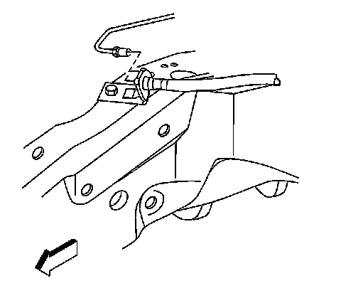
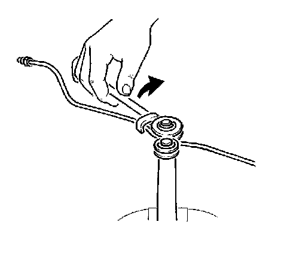

Brake Pipe Replacement
Brake Pipe Replacement
Removal Procedure
Caution: Refer to Brake Fluid Irritant Caution.
Caution: Always use double-walled steel brake pipe when replacing brake pipes. The use of any other pipe is not recommended and may cause brake system failure. Carefully route and retain replacement brake pipes. Always use the correct fasteners and in the original location for replacement brake pipes. Failure to properly route and retain brake pipes may cause damage to the brake pipes and brake system resulting in personal injury.
Notice: Refer to Brake Fluid Effects on Paint and Electrical Components Notice.
Important: Brake pipes that run parallel to each other must maintain a 6 mm (1/4 in) clearance.

1. Disconnect the brake pipe fittings.
2. Remove the brake pipe fasteners from the vehicle.
3. Remove the brake pipe from the vehicle.
Installation Procedure

1. Bend the brake pipe to achieve proper fit.
2. Install the brake pipe to the vehicle. Maintain a clearance of 25 mm (1 in) for all moving or vibrating components.
3. Install the brake pipe fasteners to the vehicle.
Notice: Refer to Fastener Notice.
4. Connect the brake pipe fittings.
^ Tighten the brake pipe fittings to the brake pressure modulator valve (BPMV) or the wheel jounce hoses to 25 N.m (18 lb ft).
^ Tighten the brake pipe fittings to the master cylinder to 25 N.m (18 lb ft).
5. Bleed the hydraulic brake system. Refer to Antilock Brake System Automated Bleed Procedure.